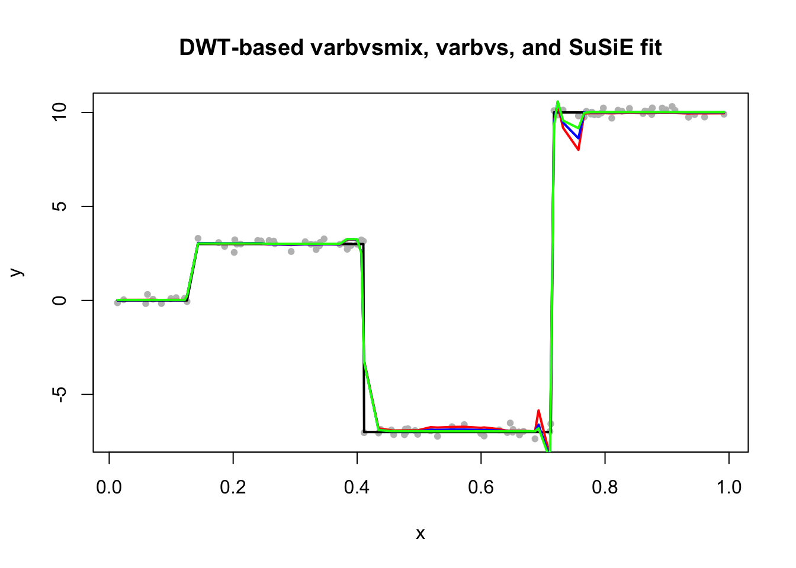

Last updated: 2019-02-22
Checks: 6 0
Knit directory: susie-np/
This reproducible R Markdown analysis was created with workflowr (version 1.2.0). The Report tab describes the reproducibility checks that were applied when the results were created. The Past versions tab lists the development history.
Great! Since the R Markdown file has been committed to the Git repository, you know the exact version of the code that produced these results.
Great job! The global environment was empty. Objects defined in the global environment can affect the analysis in your R Markdown file in unknown ways. For reproduciblity it’s best to always run the code in an empty environment.
The command set.seed(20190114) was run prior to running the code in the R Markdown file. Setting a seed ensures that any results that rely on randomness, e.g. subsampling or permutations, are reproducible.
Great job! Recording the operating system, R version, and package versions is critical for reproducibility.
Nice! There were no cached chunks for this analysis, so you can be confident that you successfully produced the results during this run.
Great! You are using Git for version control. Tracking code development and connecting the code version to the results is critical for reproducibility. The version displayed above was the version of the Git repository at the time these results were generated.
Note that you need to be careful to ensure that all relevant files for the analysis have been committed to Git prior to generating the results (you can use wflow_publish or wflow_git_commit). workflowr only checks the R Markdown file, but you know if there are other scripts or data files that it depends on. Below is the status of the Git repository when the results were generated:
Ignored files:
Ignored: .DS_Store
Ignored: .Rhistory
Ignored: .Rproj.user/
Ignored: analysis/.DS_Store
Untracked files:
Untracked: analysis/resid.RDS
Untracked: analysis/resid.RDS.zip
Untracked: analysis/wavelet-susie-20190131.Rmd
Untracked: data/dsc_em_output.RDS
Untracked: docs/figure/wavelet-susie-20190213.Rmd/
Untracked: docs/figure/wavelet-susie-20190222.Rmd/
Untracked: figure/
Unstaged changes:
Modified: analysis/UDWT.Rmd
Deleted: analysis/UDWT2.Rmd
Modified: analysis/wavelet-susie-20190121.Rmd
Modified: analysis/wavelet-susie-20190130.Rmd
Modified: analysis/wavelet-susie-20190215.Rmd
Note that any generated files, e.g. HTML, png, CSS, etc., are not included in this status report because it is ok for generated content to have uncommitted changes.
These are the previous versions of the R Markdown and HTML files. If you’ve configured a remote Git repository (see ?wflow_git_remote), click on the hyperlinks in the table below to view them.
| File | Version | Author | Date | Message |
|---|---|---|---|---|
| Rmd | 323e91e | kaiqian | 2019-02-22 | update 20190221 and add an analysis to investigate whether it is a local optimum problem |
| html | 32614a1 | kaiqian | 2019-02-21 | Build site. |
| html | 2334841 | kaiqian | 2019-02-21 | Build site. |
| Rmd | 547a29f | kaiqian | 2019-02-21 | update varbvs framework analysis |
| html | c00f55b | kaiqian | 2019-02-21 | Build site. |
| Rmd | ededd46 | kaiqian | 2019-02-21 | update varbvs framework analysis |
| html | 5e4e496 | kaiqian | 2019-02-21 | Build site. |
| Rmd | 7502be0 | kaiqian | 2019-02-21 | try varbvs framework again |
| html | bd8a5ca | kaiqian | 2019-02-21 | Build site. |
| Rmd | 7996378 | kaiqian | 2019-02-21 | try varbvs framework |
| html | 81b4d8c | kaiqian | 2019-02-21 | Build site. |
| Rmd | c4225f1 | kaiqian | 2019-02-21 | try varbvs framework |
In this vignette, we tried to apply “interpolation + DWT” using varbvs rather than SuSiE framework.
#' @param x is an n-vector of data
#' @return R an n by K interpolation matrix
create_interpolation_matrix = function(x){
n = length(x)
K = 2^(ceiling(log2(n)))
R = matrix(0, n, K)
for (i in 1:n){
for (j in 1:K){
if (j == 1 & x[i] <= 1/K){
R[i,j] = 1
} else if (j == floor(K*x[i]) & x[i] > 1/K & x[i] <=1){
R[i,j] = (j+1) - K*x[i]
} else if (j == ceiling(K*x[i]) & x[i] > 1/K & x[i] <=1){
R[i,j] = K*x[i] - (j-1)
} else R[i,j] = 0
}
}
return(R)
}n = 100
K = 2^(ceiling(log2(n)))
set.seed(1)
x = sort(runif(n, 0,1))
#beta = c(rep(0,20), rep(3,20), rep(-3,20), rep(5,40))
beta = c(rep(0,10), rep(3,30), rep(-7,30), rep(10,30))
#beta = c(rep(0,30), rep(7,2), rep(0,100-32))
set.seed(1)
y = beta + rnorm(n, sd=0.2)Create an interpolation R matrix. R is an n by K matrix, where K=2^J.
R = create_interpolation_matrix(x)Create a decimated W matrix. W.decimated is a K by K matrix.
W.decimated <- t(GenW(n=K, filter.number=1, family="DaubExPhase"))
# tcrossprod(R,W) computes R %*% t(W)
RW_t.decimated = tcrossprod(R, W.decimated)
zero.idx = which(colSums(RW_t.decimated)==0)
RW_t.decimated = RW_t.decimated[,-zero.idx]varbvs frameworkSetup standard deviations for mixtures.
sd.grid = c(0,10^seq(-2,1,length.out = 19))s.susie = susie(RW_t.decimated, y, L=50, estimate_prior_variance = TRUE, optimV_method = 'optim')predict_varbvsmix <- function (X, Z, fit) {
b <- rowSums(fit$alpha * fit$mu)
return(drop(Z %*% fit$mu.cov + X %*% b))
}Create an undecimated W matrix. W.undecimated is a K by Klog2(K) matrix.
Haar_matrix <- t(GenW(n=K, filter.number=1, family="DaubExPhase"))
DWT_W_T <- t(Haar_matrix)
n_Haar_matrix_inv <- DWT_W_T
for(i in 1:(K-1)){
order <- shift(seq(K),i)
Haar_matrix_shifted_inv <- t(Haar_matrix[,order])
n_Haar_matrix_inv <- cbind(n_Haar_matrix_inv, Haar_matrix_shifted_inv) #Each column is a basis for sparse regression
}
duplicated_columns <- duplicated(t(n_Haar_matrix_inv))
UDWT_W_T <- n_Haar_matrix_inv[, !duplicated_columns]RW_t.undecimated = R %*% UDWT_W_T
zero.idx = which(colSums(RW_t.undecimated)==0)
RW_t.undecimated = RW_t.undecimated[,-zero.idx]s.varbvsmix.undecimated = varbvsmix(X=RW_t.undecimated, Z=NULL, y=y, sa=sd.grid^2)Fitting variational approximation for linear regression model with
mixture-of-normals priors.
samples: 100 mixture component sd's: 0.01..10
variables: 890 mixture component drop thresh.: 1.0e-08
covariates: 0 fit mixture weights: yes
mixture size: 20 fit residual var. (sigma): yes
intercept: yes convergence tolerance 1.0e-04
variational max. --------- hyperparameters ---------
iter lower bound change sigma mixture sd's mix. weights (drop)
0001 -5.235251e+02 2.6e-01 4.1e+01 [0.01,1e+01] [0.010,0.063] (0)
0002 -4.033677e+02 1.1e-01 3.8e+01 [0.01,1e+01] [0.002,0.070] (0)
0003 -3.542762e+02 9.3e-02 3.5e+01 [0.01,1e+01] [0.001,0.074] (0)
0004 -3.344598e+02 6.8e-02 3.3e+01 [0.01,1e+01] [0.000,0.077] (0)
0005 -3.220853e+02 6.0e-02 3.0e+01 [0.01,1e+01] [0.000,0.079] (0)
0006 -3.144633e+02 7.1e-02 2.8e+01 [0.01,1e+01] [0.000,0.081] (0)
0007 -3.080580e+02 9.2e-02 2.6e+01 [0.01,1e+01] [0.000,0.082] (0)
0008 -3.034018e+02 7.0e-02 2.4e+01 [0.01,1e+01] [0.000,0.083] (0)
0009 -2.993173e+02 7.4e-02 2.2e+01 [0.01,1e+01] [0.000,0.084] (0)
0010 -2.961574e+02 6.4e-02 2.1e+01 [0.01,1e+01] [0.000,0.085] (0)
0011 -2.933643e+02 6.8e-02 2.0e+01 [0.01,1e+01] [0.000,0.085] (0)
0012 -2.910915e+02 5.8e-02 1.8e+01 [0.01,1e+01] [0.000,0.086] (0)
0013 -2.890819e+02 5.9e-02 1.7e+01 [0.01,1e+01] [0.000,0.086] (0)
0014 -2.873784e+02 4.7e-02 1.6e+01 [0.01,1e+01] [0.000,0.087] (0)
0015 -2.858724e+02 4.5e-02 1.6e+01 [0.01,1e+01] [0.000,0.087] (0)
0016 -2.845187e+02 4.3e-02 1.5e+01 [0.01,1e+01] [0.000,0.087] (0)
0017 -2.832685e+02 1.2e-01 1.4e+01 [0.01,1e+01] [0.000,0.087] (0)
0018 -2.817354e+02 1.3e-01 1.3e+01 [0.01,1e+01] [0.000,0.088] (0)
0019 -2.798645e+02 3.2e-01 1.3e+01 [0.01,1e+01] [0.000,0.088] (0)
0020 -2.778166e+02 7.2e-02 1.2e+01 [0.01,1e+01] [0.000,0.088] (0)
0021 -2.762948e+02 4.6e-02 1.1e+01 [0.01,1e+01] [0.000,0.088] (0)
0022 -2.749901e+02 1.6e-02 1.1e+01 [0.01,1e+01] [0.000,0.088] (0)
0023 -2.738515e+02 1.6e-02 1.0e+01 [0.01,1e+01] [0.000,0.088] (0)
0024 -2.728131e+02 1.3e-02 9.9e+00 [0.01,1e+01] [0.000,0.088] (0)
0025 -2.718974e+02 1.3e-02 9.5e+00 [0.01,1e+01] [0.000,0.088] (0)
0026 -2.710485e+02 1.2e-02 9.1e+00 [0.01,1e+01] [0.000,0.088] (0)
0027 -2.703028e+02 1.3e-02 8.7e+00 [0.01,1e+01] [0.000,0.088] (0)
0028 -2.696002e+02 1.0e-02 8.4e+00 [0.01,1e+01] [0.000,0.088] (0)
0029 -2.689846e+02 1.9e-02 8.1e+00 [0.01,1e+01] [0.000,0.088] (0)
0030 -2.683884e+02 2.2e-02 7.9e+00 [0.01,1e+01] [0.000,0.088] (0)
0031 -2.678451e+02 5.1e-02 7.6e+00 [0.01,1e+01] [0.000,0.087] (0)
0032 -2.671523e+02 1.0e-01 7.4e+00 [0.01,1e+01] [0.000,0.087] (0)
0033 -2.655740e+02 3.4e-01 7.1e+00 [0.01,1e+01] [0.000,0.087] (0)
0034 -2.614673e+02 2.8e-01 6.8e+00 [0.01,1e+01] [0.000,0.088] (0)
0035 -2.578841e+02 5.1e-02 6.5e+00 [0.01,1e+01] [0.000,0.088] (0)
0036 -2.548151e+02 1.9e-02 6.2e+00 [0.01,1e+01] [0.000,0.088] (0)
0037 -2.522032e+02 4.8e-02 5.8e+00 [0.01,1e+01] [0.000,0.088] (0)
0038 -2.498418e+02 3.7e-02 5.6e+00 [0.01,1e+01] [0.000,0.089] (0)
0039 -2.477548e+02 5.9e-02 5.3e+00 [0.01,1e+01] [0.000,0.089] (0)
0040 -2.458310e+02 5.0e-02 5.1e+00 [0.01,1e+01] [0.000,0.089] (0)
0041 -2.441398e+02 6.8e-02 4.9e+00 [0.01,1e+01] [0.000,0.089] (0)
0042 -2.425784e+02 4.8e-02 4.7e+00 [0.01,1e+01] [0.000,0.090] (0)
0043 -2.412288e+02 8.4e-02 4.5e+00 [0.01,1e+01] [0.000,0.090] (0)
0044 -2.399786e+02 3.0e-02 4.3e+00 [0.01,1e+01] [0.000,0.090] (0)
0045 -2.388909e+02 1.4e-01 4.1e+00 [0.01,1e+01] [0.000,0.090] (0)
0046 -2.377318e+02 7.7e-02 4.0e+00 [0.01,1e+01] [0.000,0.091] (0)
0047 -2.360336e+02 3.6e-01 3.8e+00 [0.01,1e+01] [0.000,0.091] (0)
0048 -2.336272e+02 2.0e-01 3.7e+00 [0.01,1e+01] [0.000,0.091] (0)
0049 -2.317584e+02 2.5e-02 3.5e+00 [0.01,1e+01] [0.000,0.092] (0)
0050 -2.303667e+02 5.4e-03 3.3e+00 [0.01,1e+01] [0.000,0.092] (0)
0051 -2.292631e+02 3.7e-02 3.2e+00 [0.01,1e+01] [0.000,0.092] (0)
0052 -2.283508e+02 1.4e-02 3.1e+00 [0.01,1e+01] [0.000,0.092] (0)
0053 -2.275881e+02 5.4e-02 3.0e+00 [0.01,1e+01] [0.000,0.093] (0)
0054 -2.269302e+02 3.7e-02 2.9e+00 [0.01,1e+01] [0.000,0.093] (0)
0055 -2.263471e+02 9.0e-02 2.8e+00 [0.01,1e+01] [0.000,0.093] (0)
0056 -2.257895e+02 1.0e-01 2.7e+00 [0.01,1e+01] [0.000,0.093] (0)
0057 -2.251904e+02 1.7e-01 2.6e+00 [0.01,1e+01] [0.000,0.094] (0)
0058 -2.244719e+02 1.9e-01 2.5e+00 [0.01,1e+01] [0.000,0.094] (0)
0059 -2.237059e+02 1.6e-01 2.5e+00 [0.01,1e+01] [0.000,0.094] (0)
0060 -2.230217e+02 5.3e-02 2.4e+00 [0.01,1e+01] [0.000,0.094] (0)
0061 -2.224657e+02 2.2e-02 2.3e+00 [0.01,1e+01] [0.000,0.094] (0)
0062 -2.220025e+02 4.3e-03 2.3e+00 [0.01,1e+01] [0.000,0.095] (1)
0063 -2.216129e+02 2.8e-03 2.2e+00 [0.01,1e+01] [0.000,0.095] (2)
0064 -2.212871e+02 2.9e-03 2.1e+00 [0.01,1e+01] [0.000,0.095] (2)
0065 -2.210133e+02 2.2e-03 2.1e+00 [0.01,1e+01] [0.000,0.095] (2)
0066 -2.207857e+02 3.0e-03 2.1e+00 [0.01,1e+01] [0.000,0.095] (2)
0067 -2.205956e+02 2.2e-03 2.0e+00 [0.01,1e+01] [0.000,0.095] (2)
0068 -2.204384e+02 3.0e-03 2.0e+00 [0.01,1e+01] [0.000,0.096] (2)
0069 -2.203077e+02 2.2e-03 2.0e+00 [0.01,1e+01] [0.000,0.096] (2)
0070 -2.202001e+02 2.9e-03 1.9e+00 [0.01,1e+01] [0.000,0.096] (2)
0071 -2.201109e+02 2.2e-03 1.9e+00 [0.01,1e+01] [0.000,0.096] (2)
0072 -2.200376e+02 2.8e-03 1.9e+00 [0.01,1e+01] [0.000,0.096] (2)
0073 -2.199770e+02 2.0e-03 1.9e+00 [0.01,1e+01] [0.000,0.096] (2)
0074 -2.199274e+02 2.6e-03 1.9e+00 [0.01,1e+01] [0.000,0.096] (2)
0075 -2.198863e+02 1.9e-03 1.8e+00 [0.01,1e+01] [0.000,0.096] (2)
0076 -2.198527e+02 2.4e-03 1.8e+00 [0.01,1e+01] [0.000,0.096] (2)
0077 -2.198248e+02 1.7e-03 1.8e+00 [0.01,1e+01] [0.000,0.096] (2)
0078 -2.198020e+02 2.2e-03 1.8e+00 [0.01,1e+01] [0.000,0.096] (2)
0079 -2.197830e+02 1.5e-03 1.8e+00 [0.01,1e+01] [0.000,0.096] (2)
0080 -2.197674e+02 2.0e-03 1.8e+00 [0.01,1e+01] [0.000,0.097] (2)
0081 -2.197544e+02 1.3e-03 1.8e+00 [0.01,1e+01] [0.000,0.097] (2)
0082 -2.197437e+02 1.7e-03 1.8e+00 [0.01,1e+01] [0.000,0.097] (2)
0083 -2.197347e+02 1.1e-03 1.8e+00 [0.01,1e+01] [0.000,0.097] (3)
0084 -2.197272e+02 1.5e-03 1.8e+00 [0.01,1e+01] [0.000,0.097] (3)
0085 -2.197208e+02 9.3e-04 1.8e+00 [0.01,1e+01] [0.000,0.097] (3)
0086 -2.197155e+02 1.3e-03 1.8e+00 [0.01,1e+01] [0.000,0.097] (3)
0087 -2.197110e+02 7.9e-04 1.8e+00 [0.01,1e+01] [0.000,0.097] (3)
0088 -2.197071e+02 1.2e-03 1.7e+00 [0.01,1e+01] [0.000,0.097] (4)
0089 -2.197037e+02 6.6e-04 1.7e+00 [0.01,1e+01] [0.000,0.097] (4)
0090 -2.197009e+02 1.0e-03 1.7e+00 [0.01,1e+01] [0.000,0.097] (4)
0091 -2.196983e+02 5.5e-04 1.7e+00 [0.01,1e+01] [0.000,0.097] (4)
0092 -2.196961e+02 8.9e-04 1.7e+00 [0.01,1e+01] [0.000,0.097] (4)
0093 -2.196941e+02 4.6e-04 1.7e+00 [0.01,1e+01] [0.000,0.097] (4)
0094 -2.196923e+02 7.8e-04 1.7e+00 [0.01,1e+01] [0.000,0.097] (4)
0095 -2.196907e+02 3.8e-04 1.7e+00 [0.01,1e+01] [0.000,0.097] (4)
0096 -2.196893e+02 6.9e-04 1.7e+00 [0.01,1e+01] [0.000,0.097] (4)
0097 -2.196879e+02 3.1e-04 1.7e+00 [0.01,1e+01] [0.000,0.097] (4)
0098 -2.196867e+02 6.1e-04 1.7e+00 [0.01,1e+01] [0.000,0.097] (4)
0099 -2.196856e+02 2.5e-04 1.7e+00 [0.01,1e+01] [0.000,0.097] (4)
0100 -2.196845e+02 5.4e-04 1.7e+00 [0.01,1e+01] [0.000,0.098] (4)
0101 -2.196835e+02 2.1e-04 1.7e+00 [0.01,1e+01] [0.000,0.098] (4)
0102 -2.196825e+02 4.8e-04 1.7e+00 [0.01,1e+01] [0.000,0.098] (4)
0103 -2.196816e+02 1.7e-04 1.7e+00 [0.01,1e+01] [0.000,0.098] (4)
0104 -2.196807e+02 4.4e-04 1.7e+00 [0.01,1e+01] [0.000,0.098] (4)
0105 -2.196799e+02 1.4e-04 1.7e+00 [0.01,1e+01] [0.000,0.098] (4)
0106 -2.196791e+02 4.0e-04 1.7e+00 [0.01,1e+01] [0.000,0.098] (4)
0107 -2.196784e+02 1.3e-04 1.7e+00 [0.01,1e+01] [0.000,0.098] (4)
0108 -2.196776e+02 3.6e-04 1.7e+00 [0.01,1e+01] [0.000,0.098] (4)
0109 -2.196769e+02 1.3e-04 1.7e+00 [0.01,1e+01] [0.000,0.098] (4)
0110 -2.196762e+02 3.3e-04 1.7e+00 [0.01,1e+01] [0.000,0.098] (4)
0111 -2.196755e+02 1.2e-04 1.7e+00 [0.01,1e+01] [0.000,0.098] (4)
0112 -2.196749e+02 3.1e-04 1.7e+00 [0.01,1e+01] [0.000,0.098] (4)
0113 -2.196742e+02 1.2e-04 1.7e+00 [0.01,1e+01] [0.000,0.098] (4)
0114 -2.196736e+02 2.9e-04 1.7e+00 [0.01,1e+01] [0.000,0.098] (4)
0115 -2.196730e+02 1.1e-04 1.7e+00 [0.01,1e+01] [0.000,0.098] (4)
0116 -2.196724e+02 2.7e-04 1.7e+00 [0.01,1e+01] [0.000,0.098] (4)
0117 -2.196719e+02 1.1e-04 1.7e+00 [0.01,1e+01] [0.000,0.098] (4)
0118 -2.196713e+02 2.5e-04 1.7e+00 [0.01,1e+01] [0.000,0.098] (4)
0119 -2.196708e+02 1.1e-04 1.7e+00 [0.01,1e+01] [0.000,0.098] (4)
0120 -2.196702e+02 2.4e-04 1.7e+00 [0.01,1e+01] [0.000,0.098] (4)
0121 -2.196697e+02 1.0e-04 1.7e+00 [0.01,1e+01] [0.000,0.098] (4)
0122 -2.196692e+02 2.3e-04 1.7e+00 [0.01,1e+01] [0.000,0.098] (4)
0123 -2.196687e+02 1.0e-04 1.7e+00 [0.01,1e+01] [0.000,0.098] (4)
0124 -2.196682e+02 2.2e-04 1.7e+00 [0.01,1e+01] [0.000,0.098] (4)
0125 -2.196678e+02 9.9e-05 1.7e+00 [0.01,1e+01] [0.000,0.098] (4)
Below we just use DWT-based matrix in the regression. The red line is varbvsmix fit, the blue line is varbvs fit, and the green line is SuSiE fit. We notice that SuSiE and varbvs fits are very similar. varbvs does not solve SuSiE’s problem, which is having artifacts around jumps. And we observe that actually varbvsmix fit is shifted, which seems like the problem could be solved by introducing a scaling parameter (as discussed yesterday). But one thing I’m not sure is about my usage on varbvsmix. I set standard deviations for mixtures as
sd.grid = c(0,10^seq(-2,1,length.out = 19))and perform varbvsmix using this sd.grid
s.varbvsmix = varbvsmix(X=RW_t.decimated, Z=NULL, y=y, sa=sd.grid^2)The fits are the same as displayed in the red line below.
plot(x, y, pch=20, col="grey", main = "DWT-based varbvsmix, varbvs, and SuSiE fit")
lines(x, beta, col="black", lwd=2)
lines(x, predict_varbvsmix(RW_t.decimated, matrix(1,n,1), s.varbvsmix), col='red', lwd=2)
lines(x, predict(s.varbvs, RW_t.decimated), col='blue', lwd=2)
lines(x, predict(s.susie), col="green", lwd=2)
#lines(x, predict_varbvsmix(RW_t.undecimated, matrix(1,n,1), s.varbvsmix.undecimated), col='orange', lwd=2)
sessionInfo()R version 3.4.3 (2017-11-30)
Platform: x86_64-apple-darwin15.6.0 (64-bit)
Running under: macOS Sierra 10.12.6
Matrix products: default
BLAS: /Library/Frameworks/R.framework/Versions/3.4/Resources/lib/libRblas.0.dylib
LAPACK: /Library/Frameworks/R.framework/Versions/3.4/Resources/lib/libRlapack.dylib
locale:
[1] en_US.UTF-8/en_US.UTF-8/en_US.UTF-8/C/en_US.UTF-8/en_US.UTF-8
attached base packages:
[1] stats graphics grDevices utils datasets methods base
other attached packages:
[1] varbvs_2.4-0 smashr_1.2-0 susieR_0.6.4.0438
[4] binhf_1.0-3 adlift_1.4-1 EbayesThresh_1.4-12
[7] wavethresh_4.6.8 MASS_7.3-51.1
loaded via a namespace (and not attached):
[1] Rcpp_1.0.0 RColorBrewer_1.1-2 compiler_3.4.3
[4] git2r_0.24.0 workflowr_1.2.0 bitops_1.0-6
[7] iterators_1.0.10 tools_3.4.3 digest_0.6.18
[10] evaluate_0.12 lattice_0.20-38 Matrix_1.2-15
[13] foreach_1.4.4 yaml_2.2.0 parallel_3.4.3
[16] xfun_0.4 stringr_1.3.1 knitr_1.21
[19] fs_1.2.6 caTools_1.17.1.1 rprojroot_1.3-2
[22] grid_3.4.3 glue_1.3.0 data.table_1.11.8
[25] rmarkdown_1.11 latticeExtra_0.6-28 ashr_2.2-7
[28] magrittr_1.5 whisker_0.3-2 matrixStats_0.54.0
[31] backports_1.1.3 codetools_0.2-16 htmltools_0.3.6
[34] stringi_1.2.4 doParallel_1.0.14 pscl_1.5.2
[37] truncnorm_1.0-8 SQUAREM_2017.10-1